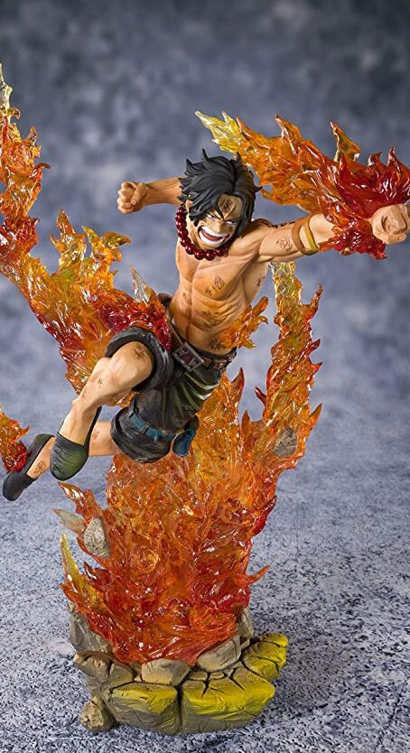

Exclusive One Piece Figurines

TAMASHII NATIONS Bandai Figuarts Zero Portgas･D･Ace -Commander of The Whitebeard 2ND Division- Onepiece, Multi
FEATURES
- Theme: Anime
- Anime: One Piece
- Brand: TAMASHII NATIONS
- Item Dimensions (L x W x H): 4.5 x 11 x 15.7 inches
- Material: Acrylonitrile Butadiene Styrene
- Collection Name: Portgas･D･Ace -Commander of the Whitebeard 2nd Division
- Watch Product Review
ABOUT THIS ITEM
- Commander of the whitebeard Pirates, "fire Ace" Portgas D Ace joins figuarts zero
- They're high-impact distillations of the One Piece world, finished with gorgeous effects.
- The set includes the figure and a stand.
- Luffy's adopted big brother and son of the great pirate King himself, Portgas is one of the series' Key characters. Here he is rendered in a dynamic fighting scene complete with translucent effect parts
- Approx. 15.7in tall, Highly Detailed, Anime Accurate
- Only product with affixed official Bluefin and Bandai Namco label has been thoroughly tested for safety and meets all North American consumer product safety regulations and entitles the purchaser to product support assistance
PRICE : RM 109.99